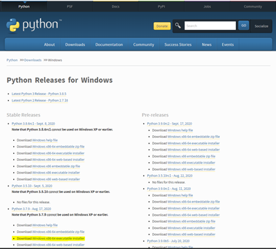
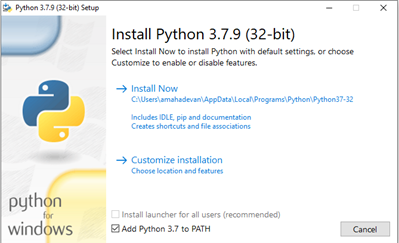
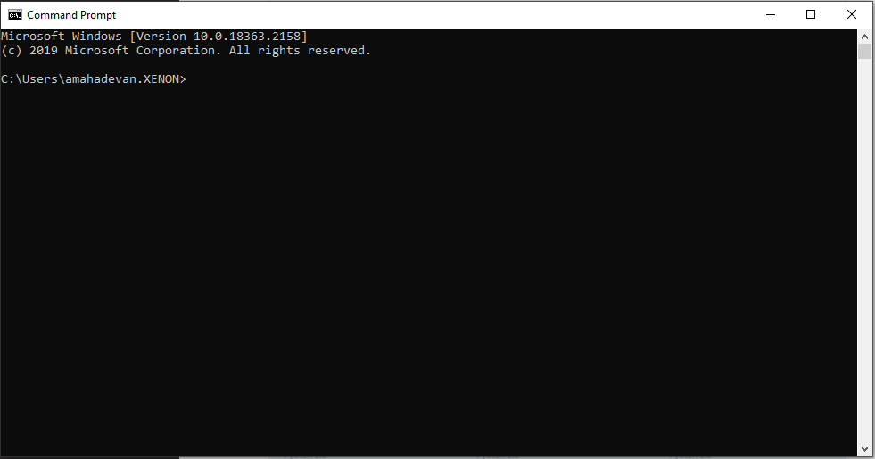
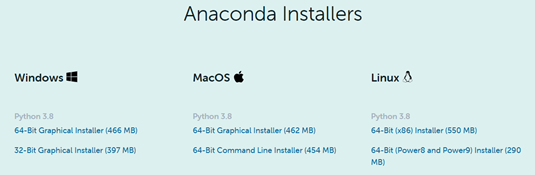
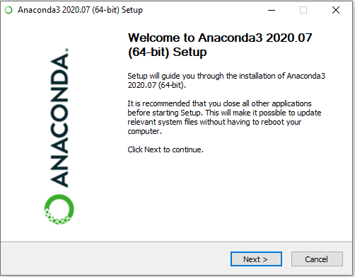
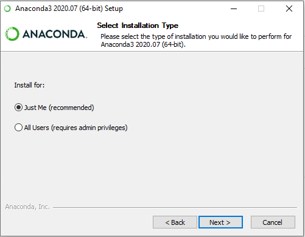
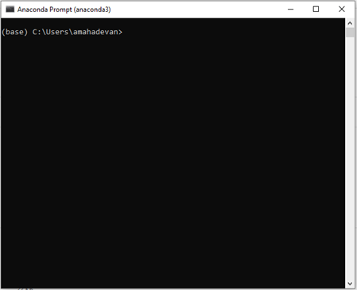

Installation, Setup and Running Xenon LFP Analysis GUI
Xenon LFP Analysis Platform is a Plotly Dash application running on Python.
Quick Start
Install Python and pip module if not already installed.
Install Xenon Lfp Analysis package
>pip install xenon_lfp_analysis
To start the gui:
>run_lfp_analysis
This should open the gui in the browser, you can view the video tutorials to get started.
Python Installation
The instruction below are for installing Python for Windows. Linux and Mac OS by default have a Python installation, you can skip to installing the Python libraries from the requirements.txt file.
Option 1: Using Python for Windows Environment
- Download Python>3.7x
- 
- Run the downloaded installer file, Do Not check “Install launcher for all users (recommended)”, may need administrative permissions for all users. This will create a local environment for Python under Windows user account currently logged-in.
- 
Install pip:
- Once the Python installation is complete, open the Command Prompt:
- 
b. Check the pip installation:
>python -m pip –-version
c. If pip installation is not found:
>python get-pip.py
{kind=link}
{kind=link}
{kind=link}
4. Install the required Python libraries:
>python -m install 'requirements.txt'
Option 2: Using Anaconda for Windows and MacOS Environment
- Download the appropriate Anaconda-Version
- 
- Run the installer file:
- 
- Select “Just Me (recommended)”” and continue to complete the installation:
- 
- Select and open “Anaconda Prompt” from the Windows ‘Start’ Menu:
- 
{kind=link}
{kind=link}
{kind=link}
{kind=link}
5. Install the required Python libraries:
>python -m pip install 'requirements.txt'
Download and Run Executable:
Windows
Download the application Xenon-LFP-Analysis-Windows
Copy and Paste the url (http://127.0.0.1:7080) in any browser to run the application:
MacOS
Download the application Xenon-LFP-Analysis-MacOS
Open a new terminal window, cd into the downloaded file location.
Run the following command to change/confirm it is a Unix Executable.
$ chmod u+x Xenon-LFP-Analysis
Now you can double click on the file to run the application.
If you get a security warning, click on the Apple logo -> System Preferences -> Security & Privacy. At the bottom of the window, press ‘Allow’ to allow the file to run.
Copy and Paste the url (http://127.0.0.1:7080) in any browser to run the application
Linux (Ubuntu/Debian)
Download the application Xenon-LFP-Analysis-Ubuntu
Open a new terminal window, cd into the downloaded file location.
Run the following command to change/confirm it is a Unix Executable.
$ chmod u+x Xenon-LFP-Analysis
Run the application
$./Xenon-LFP-Analysis
Copy and Paste the url http://127.0.0.1:7080 in any browser.
Export Channels For Analysis
The full recording from the HD MEA platform can range from 80 GB to 250GB uncompressed and will not fit in the systems local memory (RAM) for analysis. The Dash application can only work within the capacity of the local memory, for this we export a subset of channels that are of interest and downsample the traces to less than 2048 Hz sampling frequency. This gives us a frequency range of upto 1024 Hz (2048/2 Nyquist Frequency), also the maximum sampling frequency is not limited by the processing capability of the application, but limited to rendering inteactive scatter plots with a large number of data points in the browser. For example the application can work with two or three traces of sampled at 10000 Hz, or about 200 traces at 2048 Hz or 600 to 1000 traces at a sampling frequency of 300 Hz.
HD-MEA Recording using the 3Brain BioCAM-X Measurement System:
This example below is illustrated for the BrainWave4 Software, other aquisition systems may have a different process.
{kind=link}
{kind=link}
{kind=link}
Downsample Exported Channels for Analysis
BrainWave4 .brw HDF5 Files (3Brain - BioCAM-X Measurement):
The current example is illustrated to work with the 3Brain BioCAM-X recording using the BrainWave4 Software. The code is provided in the GitHub Repository:
1. Open Windows Command Prompt (cmd) if you are using Python base installation, or Open Anaconda Command Prompt (anaconda) if you are working with Anaconda.
{kind=link}
If you have the the xenon_lfp_analysis package installed you can run the following to downsample *.brw file
>downsample_brw
or
2. Download or clone the code-files from GitHub-Repository, run the below command using the full path of the code file HD-MEA-DownSample.py.
>python C:\\Downloads\\xenon-lfp-analysis\\code-files\\HD-MEA-DownSample.py -f \\file-path\\Slice1_raw.brw :str -ns SamplingFrequency: int -bs blocksize: default 100000
or
>python C:\\Downloads\\xenon-lfp-analysis\\code-files\\HD-MEA-DownSample.py
HD-MEA Recording using the UTAH Array Measurement System:
A sample Utah-Array (BlackRock Microsystems) recording is provided in the *.ns5 format , a code file is provided to extract the data and downsample to a lower frequency for analysis with the Xenon-LFP-Analysis platform.
1. Open Windows Command Prompt (cmd) if you are using Python base installation, or Open Anaconda Command Prompt (anaconda) if you are working with Anaconda.
2. Download or clone the code-files from GitHub-repository, run the below command using the full path of the code file utah-array-conversion.py. You can either use the -f and -ns tags to provide the file name and new sampling frequency in Hz, or when promted enter the full file path for the .ns5 file, and enter the desired sampling frequency.
>python C:\\Downloads\\xenon-lfp-analysis\\code-files\\utah-array-conversion.py -f \\file-path\\Slice1.ns5 :str -ns SamplingFrequency: int
or
>python C:\\Downloads\\xenon-lfp-analysis\\code-files\\utah-array-conversion.py
3. The downsampled file can be now be run on the Xenon-LFP-Analysis platform.The code may need a few modifications for larger recordings, the provided example is only a sample and may vary by use case, feel free to email or contact us if you run into issues.
Running Dash and Xenon LFP Analysis Platform
BrainWave4 .brw HDF5 Files (3Brain - BioCAM-X Measurement):
The current example is illustrated to work with the 3Brain BioCAM-X recording using the BrainWave4 Software. The code is provided in the GitHub Repository:
While Dash applications can be deployed on a server and run remotely, it does not work well in this case, particularly on the .brw and large HDF5 files. The HDF5 files are not suitable for multiple parallel reads, or loading and transmitting data over a network, it is quite challenging to load and transmit large chunks of the HDF5 files back and forth between the remote server and local storage. In this case we have found it inefficient, sometimes the file does not load, when the application is deployed on a remote server. For efficient analysis, the Dash application needs to run on the local machine and accessed through local host as below, it is also recommended that data files are present in the local hard-drive.
1. Open Windows Command Prompt (cmd) if you are using Python base installation, or Open Anaconda Command Prompt (anaconda) if you are working with Anaconda.
2. Download or clone the code-files from GitHub-Repository, run the below command using the full path of the code file HD-MEA-DownSample.py.
>python C:\\Downloads\\xenon-lfp-analysis\\code-files\\Xenon-LFP-Analysis.py
{kind=link}
Copy and paste http://127.0.0.1:8050/ in the browser (Firefox or Chrome).
Repeat steps 1 to 3 if the program crashes or you want to restart analysis.